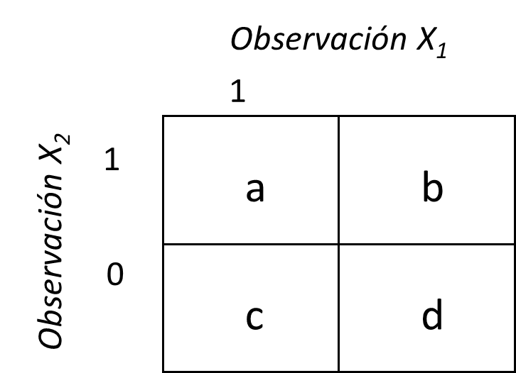

Resumen de las actividades
<div style=“text-align: justify”>
El presente taller tiene por propósito realizar una investigación sobre coeficientes de uso común para evaluar la similitud y distancia entre objetos (sitios, individuos, muestreos, etc.), evaluados a través de datos multivariados. Esta información será de mucha utilidad para diferentes técnicas de ordenación y de clasificación multivariada, en especial de los análisis de escalamiento multidimensional (ordenación) de clúster (clasificación).
El trabajo consiste en la realización de una investigación en grupos de máximo 3 estudiantes, basada en la contextualización de los coeficientes seleccionados del siguiente formulario: ENLACE_FORMULARIO. Se deben consultar los siguientes documentos:
Libro Numerical Ecology (Legendre y Legendre 1998) ENLACE DEL LIBRO

Capítulo 3. Libro Numerical Ecology with R (Borcard et al. 2018) ENLACE_DEL_LIBRO

Libro Coeficientes de asociación (Rodríguez-Salazar et al. 2001) ENLACE DEL LIBRO

Capitulo 7 de Rodríguez-Barrios, J. (2023) ENLACE DEL LIBRO

Requisitos de la actividad
<div style=“text-align: justify”>
Entregar un documento de máximo 4 páginas que responda a los siguientes requerimientos. Presentar un seminario de máximo 10 minutos, que contenga la información de los ítems 1 a 3.
Formula de los coeficientes y su explicación. Indicar en que técnicas multivariadas se aplican estas distancias o coeficientes de similitud.
Ejemplo en el que se aplique algún paquete de R que utilicen los coeficientes asignados (con matrices del punto 8).
Ejemplo de un estudio de caso, en el que se apliquen los coeficientes o distancias asignadas. Si en un mismo estudio no se aplican todas las distancias o coeficientes asignados, pueden presentar más estudios de caso.
En la Asignación, se debe cargar (1) un resumen por escrito en PDF de máximo 4 páginas (en Rmarkdwn o Quarto), con los ítems 1 a 3, junto a (2) los scripts de R y (3) las bases de datos .csv utilizadas.
La fecha límite de entrega del documento, envío de diapositivas será el miércoles 1 de abril.
Los trabajos con mayor revisión bibliográfica tendrán un puntaje superior.
Aplicar las figuras relacionadas a la distancia o coeficiente seleccionado, como las que se realizan en Borcard et al. (2018) o en Rodríguez-Barrios (2023).
Nota 1: Para el requisito 2, se debe trabajar el ejercicio con los datos del archivo “insectos.csv” enlace_archivo_csv que corresponde a datos de abundancia de 5 órdenes de insectoscolectados en el río Gaira, Santa Marta (Rodriguez et al. 2011).
En caso de que haya seleccionado alguno de los temas de exposición 1 al 3: El siguiente procedimiento muestra una manera en que se puede transformar la base de datos “insectos” (Tabla 1) a binaria (comando ifelse) (Tabla 2), este procedimiento es para el caso en que el coeficiente asignado sea binario.
Código
library(kableExtra)| quebrada | pH | temperatura | Efemeroptera | Plecoptera | Trichoptera | Diptera | Coleoptera |
|---|---|---|---|---|---|---|---|
| 1 | 6.8 | 17.4 | 26 | 4 | 9 | 30 | 3 |
| 2 | 5.5 | 17.1 | 17 | 1 | 23 | 16 | 17 |
| 3 | 6.3 | 17.0 | 7 | 2 | 25 | 10 | 0 |
| 4 | 7.3 | 16.8 | 0 | 6 | 9 | 25 | 0 |
| 5 | 7.2 | 18.9 | 0 | 3 | 0 | 25 | 0 |
| 6 | 7.0 | 18.1 | 28 | 6 | 0 | 30 | 0 |
| 7 | 7.0 | 16.3 | 0 | 4 | 0 | 19 | 0 |
| 8 | 6.1 | 15.0 | 0 | 4 | 0 | 30 | 12 |
| 9 | 6.2 | 15.8 | 0 | 5 | 0 | 0 | 5 |
| 10 | 7.5 | 16.8 | 0 | 0 | 12 | 0 | 3 |
| 11 | 5.6 | 16.0 | 0 | 0 | 28 | 0 | 3 |
| 12 | 6.1 | 17.8 | 4 | 0 | 35 | 0 | 9 |
| 13 | 6.3 | 17.8 | 2 | 0 | 25 | 0 | 6 |
| 14 | 6.7 | 15.3 | 19 | 0 | 7 | 36 | 0 |
| 15 | 7.0 | 18.2 | 12 | 5 | 23 | 9 | 0 |
| 16 | 7.0 | 19.8 | 13 | 6 | 9 | 0 | 0 |
| 17 | 5.7 | 15.3 | 5 | 0 | 32 | 11 | 0 |
| 18 | 7.1 | 17.2 | 0 | 5 | 0 | 32 | 0 |
| 19 | 5.6 | 18.2 | 0 | 0 | 0 | 12 | 13 |
| 20 | 5.6 | 15.0 | 3 | 0 | 23 | 39 | 4 |
Código
# Conversión de datos de abundancia a datos binarios
datos1 = sapply(datos, function(x) ifelse(x > 0.5, 1, 0))
# Edición de la tabla para su impresión
datos1[,4:8] %>%
kbl(caption = "", booktabs = F) %>%
kable_classic(full_width = F, html_font = "Cambria")| Efemeroptera | Plecoptera | Trichoptera | Diptera | Coleoptera |
|---|---|---|---|---|
| 1 | 1 | 1 | 1 | 1 |
| 1 | 1 | 1 | 1 | 1 |
| 1 | 1 | 1 | 1 | 0 |
| 0 | 1 | 1 | 1 | 0 |
| 0 | 1 | 0 | 1 | 0 |
| 1 | 1 | 0 | 1 | 0 |
| 0 | 1 | 0 | 1 | 0 |
| 0 | 1 | 0 | 1 | 1 |
| 0 | 1 | 0 | 0 | 1 |
| 0 | 0 | 1 | 0 | 1 |
| 0 | 0 | 1 | 0 | 1 |
| 1 | 0 | 1 | 0 | 1 |
| 1 | 0 | 1 | 0 | 1 |
| 1 | 0 | 1 | 1 | 0 |
| 1 | 1 | 1 | 1 | 0 |
| 1 | 1 | 1 | 0 | 0 |
| 1 | 0 | 1 | 1 | 0 |
| 0 | 1 | 0 | 1 | 0 |
| 0 | 0 | 0 | 1 | 1 |
| 1 | 0 | 1 | 1 | 1 |
Temas a seleccionar
<div style=“text-align: justify”>
Cada grupo de trabajo debe seleccionar su tema de seminario en el siguiente enlace: FORMULARIO_TEMAS
Coeficientes de similitud y distancias a seleccionar por cada grupo de estudiantes
| Tema | Subtema | Estudiantes |
|---|---|---|
| Semejanza ecológica | Introducción, Análisis Q y R, Coeficientes de Asociación (Modo Q y R). Modo Q: Coeficientes de Similitud binarios simétricos y asimétricos S1, S2, S3 (simple matching coefficient). Ejemplos. |
|
| Coeficientes asimétricos binarios | Introducción, Coeficientes S7 (Jaccard), S8(Sorensen), S15 (Gower). Ejemplos. |
|
| Coeficientes asimétricos binarios | Introducción, Coeficientes S14 (Ochiai), S18 (kulczynski cuantitativo). Ejemplos. |
|
| Modo Q: Coeficientes de distancia | Introducción al Modo Q, Diferencias entre Distancias Métricas, Semi-métricas y no métricas, D1 (Euclídea), D14 (Bray Curtis). Ejemplos. |
|
| Modo Q: Coeficientes de distancia | Introducción, D17 (Distancia Hellinger), D16 (Distancia Chi Cuadrado), D3 (Distancia Cuerda). Ejemplos. |
|
| Modo Q: Coeficientes de distancia | Introducción al Modo Q, D5 (Distancia generalizada de Mahalanobish) y su aplicación en comparación de muestras multivariadas |
|
| Modo R: Asociación de variables. | Introducción al Modo R, Diferencias con el modo Q. Coeficientes de Pearson, Spearman y Kendall. ejemplos. |
Nota 2. Los responsables de los temas 1 al 3, deben explicar los coeficientes, basados en la siguiente matriz, p. 254 (Legendre y Legendre 1998), p. 22 (Rodríguez-Salazar et al. 2001) u otros referentes:

Explicar en que consisten los diferentes elementos de la matriz anterior (observaciones, 0, 1, a, b, c, d), incluidas las variables binarias que se analizan.